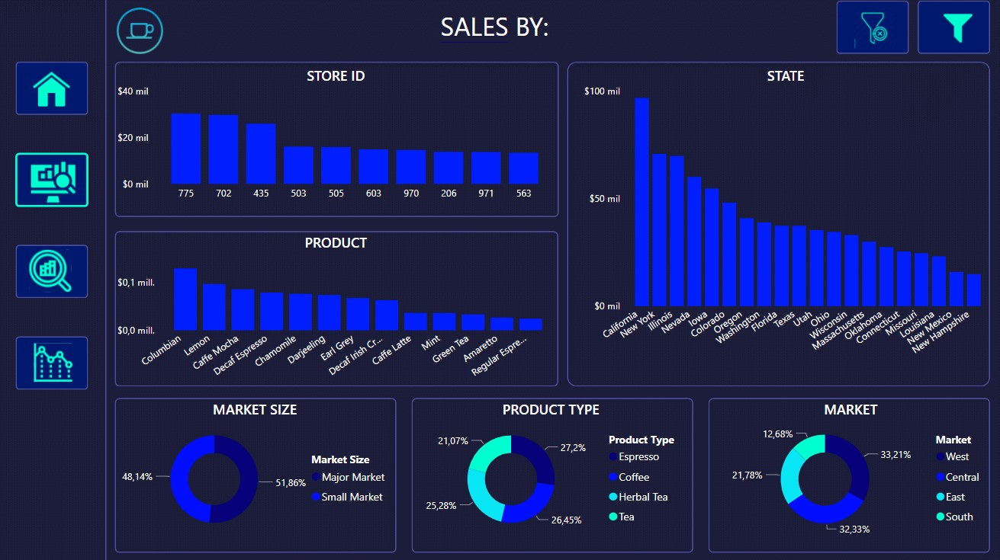

For this project we develop data analysis skills like exploratory
data analysis EDA, data cleaning, data visualization, feature
engineering, hyperparameters tunning and modeling using different techniques.
In this project we use differente ML techniques like
logistic regression, decision tree, random forest and gradient and select the option that fit the best for our data.
For this project we aim to get the same insights from my first Python project
but in SQL language. In this project we developed basic to intermediate queries
that includes aggregation functions, JOIN clauses and subqueries and we were able to
replicate the same queries we create in Python language. For the queries development
I used almost the same lines of code for SQL and Python.

In this project I created a totally interactive dashboard for the sales of a coffee shops company.
I used all the power bi tools like DAX, power query and bookmarks to create
sales forecast charts, “what if” scenarios related to profit, custom slicers with bookmarks and many other visualizations
with valuable information about stores sales and profit.

For this project we use Python libraries like "Requests" and "BeautifulSoup" for webscraping a car sale website
with the purpose of getting familiar with the vehicular market, particularly in Colombia. In particular
we analyze Nissan Versa's that were for sale and compare the price and other characteristics
with one we took as a example and see if the price that we estimate for our example is accurate according to
the market. The code that we create in Python is functional for every brand car and reference.